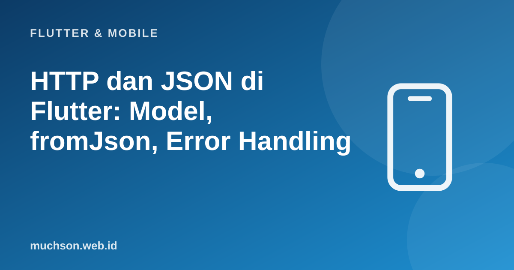

Beranda › Artikel › Flutter & Mobile
Flutter & MobileHTTP dan JSON di Flutter: Model, fromJson, Error Handling
Hampir setiap aplikasi seluler berbicara dengan server. Tugasnya tampak sederhana: panggil URL, dapatkan JSON, tampilkan. Namun yang membedakan aplikasi yang andal dari yang sering crash adalah cara Anda memodelkan data, menangani respons yang tidak diharapkan, dan memisahkan kode jaringan dari tampilan.
Sebaiknya sudah paham: async Dart, class Dart

Setelah membaca dan mencoba materi ini, Anda mampu:
- memanggil API dengan paket http dan membaca status serta isi
- memodelkan JSON menjadi class Dart dengan fromJson dan toJson
- menangani data yang hilang, bertipe salah, atau bernilai null dengan aman
- membuat lapisan repository dengan galat bertipe
- menguji parsing JSON tanpa jaringan
Contoh Flutter ditampilkan sebagai kode yang mengikuti dokumentasi Flutter 3.x (Material 3, Dart 3). Bagian logika Dart murni dijalankan sungguhan dengan Dart SDK agar keluarannya dapat dibuktikan; kode yang butuh Flutter (widget) tidak dijalankan di halaman ini.
Memanggil API
flutter pub add httpimport 'dart:convert';
import 'package:http/http.dart' as http;
Future<List<Produk>> ambilProduk() async {
final uri = Uri.https('api.contoh.id', '/v1/produk', {'halaman': '1'}); // query terenkode otomatis
final respons = await http
.get(uri, headers: {'Accept': 'application/json'})
.timeout(const Duration(seconds: 10)); // jangan menunggu selamanya
if (respons.statusCode != 200) {
throw ApiGalat(respons.statusCode, 'Gagal memuat produk');
}
final json = jsonDecode(utf8.decode(respons.bodyBytes)) as Map<String, dynamic>; // utf8.decode: aman untuk karakter non-ASCII
return (json['data'] as List<dynamic>)
.map((e) => Produk.fromJson(e as Map<String, dynamic>))
.toList();
}Model dengan fromJson dan toJson
import 'dart:convert';
class Produk {
final int id;
final String nama;
final int harga;
final String? deskripsi; // boleh tidak ada
final DateTime dibuat;
final List<String> tag;
const Produk({
required this.id,
required this.nama,
required this.harga,
this.deskripsi,
required this.dibuat,
this.tag = const [],
});
factory Produk.fromJson(Map<String, dynamic> json) {
return Produk(
id: json['id'] as int,
nama: json['nama'] as String,
harga: (json['harga'] as num).toInt(), // num: angka bisa tiba sebagai int atau double
deskripsi: json['deskripsi'] as String?,
dibuat: DateTime.parse(json['dibuat'] as String),
tag: (json['tag'] as List<dynamic>? ?? []).cast<String>(),
);
}
Map<String, dynamic> toJson() => {
'id': id,
'nama': nama,
'harga': harga,
'deskripsi': deskripsi,
'dibuat': dibuat.toIso8601String(),
'tag': tag,
};
@override
String toString() => 'Produk($id, $nama, Rp$harga, tag: $tag)';
}
void main() {
const teks = '{"data":[{"id":1,"nama":"Kopi Gayo","harga":65000,"deskripsi":null,"dibuat":"2026-10-30T08:00:00Z","tag":["organik","lokal"]},'
'{"id":2,"nama":"Teh Hijau","harga":40000.0,"dibuat":"2026-10-29T10:30:00Z"}]}';
final json = jsonDecode(teks) as Map<String, dynamic>;
final produk = (json['data'] as List<dynamic>).map((e) => Produk.fromJson(e as Map<String, dynamic>)).toList();
for (final p in produk) {
print(p);
}
print(jsonEncode(produk.first.toJson()));
print('tahun dibuat: ${produk.first.dibuat.year}');
}Produk(1, Kopi Gayo, Rp65000, tag: [organik, lokal])
Produk(2, Teh Hijau, Rp40000, tag: [])
{"id":1,"nama":"Kopi Gayo","harga":65000,"deskripsi":null,"dibuat":"2026-10-30T08:00:00.000Z","tag":["organik","lokal"]}
tahun dibuat: 2026
Bila JSON tidak sesuai harapan
Cast as int pada nilai yang ternyata String melempar TypeError saat berjalan dan membuat layar crash. API nyata berubah, mengirim null, atau mengirim bentuk berbeda. Putuskan sejak awal: gagal keras dengan galat yang jelas (dan dilaporkan) atau toleran dengan nilai bawaan, tetapi jangan membiarkannya crash tanpa penjelasan.
class FormatTidakValid implements Exception {
final String pesan;
FormatTidakValid(this.pesan);
@override
String toString() => 'FormatTidakValid: $pesan';
}
T ambil<T>(Map<String, dynamic> json, String kunci) {
final nilai = json[kunci];
if (nilai is! T) {
throw FormatTidakValid('"$kunci" diharapkan $T tetapi ${nilai.runtimeType} ($nilai)');
}
return nilai;
}
void main() {
final bagus = {'id': 1, 'nama': 'Kopi'};
print(ambil<int>(bagus, 'id'));
final buruk = {'id': '1', 'nama': null};
for (final kunci in ['id', 'nama', 'harga']) {
try {
print(ambil<Object>(buruk, kunci));
} catch (e) {
print(e);
}
}
try {
ambil<int>(buruk, 'id');
} on FormatTidakValid catch (e) {
print('ditangkap: $e');
}
}1
1
FormatTidakValid: "nama" diharapkan Object tetapi Null (null)
FormatTidakValid: "harga" diharapkan Object tetapi Null (null)
ditangkap: FormatTidakValid: "id" diharapkan int tetapi String (1)
Lapisan repository dengan galat bertipe
sealed class ApiGalat implements Exception {
const ApiGalat(this.pesan);
final String pesan;
}
class TanpaKoneksi extends ApiGalat { const TanpaKoneksi() : super('Tidak ada koneksi internet.'); }
class WaktuHabis extends ApiGalat { const WaktuHabis() : super('Server terlalu lama menjawab.'); }
class StatusGalat extends ApiGalat { const StatusGalat(this.kode) : super('Server menolak (kode kode).'); final int kode; }
class DataRusak extends ApiGalat { const DataRusak(super.pesan); }
class ProdukRepository {
ProdukRepository(this._klien);
final http.Client _klien; // diinjeksi: mudah ditukar dengan tiruan saat tes
Future<List<Produk>> semua() async {
try {
final r = await _klien.get(Uri.https('api.contoh.id', '/v1/produk')).timeout(const Duration(seconds: 10));
if (r.statusCode != 200) throw StatusGalat(r.statusCode);
return _urai(utf8.decode(r.bodyBytes));
} on SocketException { throw const TanpaKoneksi(); }
on TimeoutException { throw const WaktuHabis(); }
on FormatException catch (e) { throw DataRusak('JSON rusak: ${e.message}'); }
}
}
// Di antarmuka: ubah galat bertipe menjadi pesan ramah dan tombol "Coba lagi"
// switch (galat) { TanpaKoneksi() => ..., WaktuHabis() => ..., StatusGalat(:final kode) => ..., DataRusak() => ... }Praktik penting lain
- Jangan menaruh kunci rahasia di aplikasi: apa pun yang ada di APK dapat diekstrak. Rahasia berada di server; aplikasi memakai token pengguna.
- HTTPS saja dan pertimbangkan certificate pinning untuk aplikasi sensitif.
- Caching dan offline: simpan respons terakhir di penyimpanan lokal agar aplikasi tetap berguna tanpa koneksi.
- Dio adalah alternatif populer (interceptor, pembatalan, unggah progres); http cukup untuk banyak kasus.
- Parsing berat di isolate (compute) bila respons sangat besar.
- Mock klien HTTP di tes (http/testing MockClient) agar tes tidak memanggil jaringan.
1. Buat model Pengguna dengan id, nama, surel opsional, dan fromJson yang aman.
2. Mengapa menyuntikkan http.Client ke repository?
3. Apa yang terjadi pada aplikasi bila API mengirim "id": "1" (string) dan model memakai as int?
4. Bagaimana menampilkan pesan ramah saat tidak ada koneksi?
- Paket http: get dengan timeout; periksa statusCode; decode utf8 lalu jsonDecode.
- Model dengan fromJson/toJson; tangani num, String?, dan daftar yang hilang.
- Data luar tidak dapat dipercaya: galat jelas atau nilai bawaan, jangan crash diam-diam.
- Repository menerjemahkan galat teknis menjadi galat bertipe; suntikkan klien untuk tes; rahasia tetap di server.